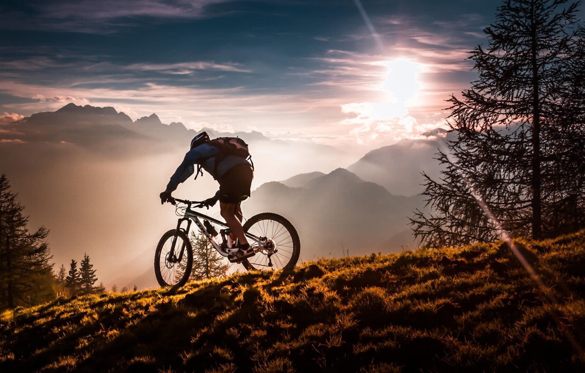

Why Minimalism is the Key to Unforgettable Travel
Traveling light is not merely about packing fewer items—it's a deeper, more profound approach to how you experience the world. Minimalist travel is a mindset that goes beyond simply carrying less; it’s about embracing simplicity, freedom, and intentionality. When you choose to travel light, you're not just reducing the weight of your luggage, but you're also freeing yourself from the excess baggage that often weighs us down in life—whether it’s material possessions, unnecessary worries, or preconceived expectations. This shift in mindset allows you to engage with your surroundings in a more meaningful way. With less to carry and less to distract you, you have more mental space to truly experience the places you visit with a clearer mind and a more open heart. It’s about being fully present, immersing yourself in each moment, and living a journey that’s guided by purpose and simplicity.
The Benefits of Minimalist Travel
The advantages of minimalist travel extend far beyond simply traveling with fewer items. When you choose to travel light, you're not only making your journey more comfortable, but you're also enhancing the quality of your experiences. By reducing the physical weight of your luggage, you simultaneously lighten your mental and emotional load. Traveling light allows you to be more flexible and spontaneous. It frees you from the constraints of rigid schedules or the constant need to manage excessive gear. You can move through new places with ease, whether you’re hiking along rugged trails, exploring hidden corners of a city, or simply finding a quiet spot to reflect. The beauty of minimalist travel lies in its ability to encourage immersion. Without the distraction of bulky luggage, you're more present in your surroundings, able to engage with the people, landscapes, and cultures around you on a deeper level. Moreover, minimalist travel teaches you to focus on experiences rather than material things. Instead of fixating on accumulating possessions, you begin to prioritize personal growth, meaningful interactions, and enriching adventures.
Disclaimer: This photo is shared for informational and educational purposes only. All rights to the original author are reserved.
How to Pack for a Minimalist Trip
Packing for a minimalist trip is both an art and a science. The goal is not just to fit everything into a smaller bag, but to thoughtfully select items that will truly enhance your travel experience. Start by considering what’s essential: versatile clothing that can be easily mixed and matched, items that serve multiple purposes, and high-quality gear that will last. This approach allows you to travel light without sacrificing comfort or practicality. Focus on clothing that is durable, easy to care for, and appropriate for various climates and activities. For example, a single jacket that’s both weatherproof and stylish can serve multiple functions, saving space while still keeping you comfortable. Think of everything you pack as something that must justify its place in your bag. Do you really need that extra pair of shoes? Can one lightweight, multifunctional backpack replace both a daypack and a larger carry-on? The key is intentionality. Only pack items that serve a specific function and that can help you adapt to the various situations you'll encounter on your trip. This strategy also involves investing in gear that can handle various activities while being lightweight and compact. A multi-purpose tool, for instance, can replace a variety of gadgets, and a well-designed travel pillow can provide comfort on long bus rides or flights.
Traveling with Less, but Gaining More
One of the most profound aspects of minimalist travel is how it transforms the way you perceive the world around you. When you travel light, you're not just carrying fewer items, you're also letting go of the excess mental clutter that can inhibit your ability to truly experience your journey. The materialistic nature of modern travel often encourages us to accumulate things—souvenirs, gadgets, and unnecessary luxuries—that take up space and distract us from the essence of travel. Minimalist travel, on the other hand, helps you reconnect with what truly matters: the people you meet, the cultures you experience, and the landscapes you encounter. By carrying less, you make more room in your life for these enriching experiences. You're more likely to engage in spontaneous adventures, have meaningful conversations with locals, and discover hidden gems that might be overlooked when you’re weighed down by physical and mental baggage. Traveling light encourages you to appreciate the intangible aspects of your journey—the feeling of freedom as you wander the streets of a foreign city, the joy of watching a sunset over the ocean without being distracted by a full camera roll, or the connection you feel when meeting someone from a completely different culture. These are the moments that stay with you long after your trip is over.
Conclusion: Embrace the Minimalist Lifestyle
Minimalist travel is more than just a way to simplify your packing—it’s a lifestyle that can profoundly enrich your travel experience. It’s about stripping away the unnecessary, so you can focus on the things that truly matter. By adopting a minimalist mindset, you allow yourself to be more flexible, more present, and more open to the world around you. It’s about choosing experiences over possessions and connections over conveniences. Rather than obsessing over every detail of your itinerary or packing the “perfect” outfit, minimalist travel encourages you to focus on the joy of discovery, the excitement of new experiences, and the simplicity of being fully immersed in the moment. The next time you plan a trip, remember that less is more. By traveling light, you not only simplify your journey but also enrich it, opening up space for greater adventure, deeper experiences, and a more meaningful connection to the world. Embrace the minimalist lifestyle and let it transform the way you travel—and the way you see the world.